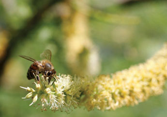

|
| ISSUE #4 |
|
Perfect Chaos  Collecting Kiawe nectar
Big Island, Hawaii Photographs by Kevin Dunn I’ve been asked on numerous occasions to broach the subject of bees—to which I often reply, “The more I work with them, the less I know.” The way I see it, to work with bees is to mirror one’s intent in life. The way in which one approaches bees is akin to the way one approaches existence. So, metaphorically speaking, bees represent anything and everything that ever did or ever will occur—simplicity/complexity, individual/society, docility/ferocity, chaos/perfection and so on. When a person enters the fraternity (or sorority) of beekeepers, his or her life is inexorably changed. Every beekeeper will tell you this, followed by a few dozen stories to prove it. These images are among the many observations I’ve encountered, told, sought, or were surprised by during my short 10-year stint as a beekeeper. As I look at these snapshots of people and bees, it makes me laugh to think of the dozens of ways we try to integrate our lives with theirs. We shift them, sell them, manipulate them and expect a certain outcome, a certain “return” from our actions. But in the end, the bees swarm, despite our efforts to contain them. They die despite our fruitless efforts to keep them alive. Or they live, despite our reckless abandon to destroy the world around them. In the end, I expect the bees will fare far better without us. Until then, it is their challenge to survive us. I say, let’s not make it any harder than it has to be.
|
This is an excerpt of the full article. To view complete text, please subscribe . You may also purchase a back issue |
Lake publishes fiction, poetry, critical essays, interviews, reviews and visual arts related to the environment.
|
Lake - Journal of Arts and Environment
Faculty of Creative and Critical Studies at the University of British Columbia Okanagan |
| web design by Idea Bureau |